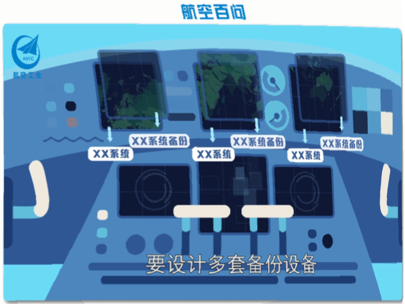

空难发生后，“飞机是否是最安全的交通工具”这一话题引发网友热议。
比较飞机的安全性，最常用的是比较不同交通工具的事故风险。
当然我们也可以统计乘客卷入致命事故的概率来说明飞机的安全性。
此外我们将基于飞机的设计与飞行保障支持来对民航的安全性做出补充说明
在此部分的最后，有着我们对这个作品想法与期望，这也是我们选择了这个主题的重要原因。
为了满足适航要求和安全指标，设计师对飞机要进行冗余设计，同一个功能的系统要设计多套备份设备，当一套设备发生故障时，备用设备可以正常的满足飞机的功能。工程师还要对飞机进行结构强度、环境与可靠性等多种地面试验，对飞机的各个系统进行测试，经历数百项的试飞验证，最后取得适航认证，交付给客户使用。

除此之外，飞机的安全运行是多部门协同保障进行的。飞行员要有足够的经验，经过严格的筛选，反复的培训；同时，地面上还要有指挥，调度；线路固定，飞机也有航线。飞机的安全优势在于更加先进的设备，更优秀的人员，更全面的检查等。
整体而言，当下航空旅行的安全性正逐年提高。根据国际航空运输协会发布的《2020年航空运输安全报告》，2020年航空旅行的致命风险平均值为0.13，即若一名旅客每天都搭乘飞机旅行，461年才可能遭遇到一次致命事故。
这一系列的数据可以告诉我们，飞机依旧是安全的出行方式。尽管发生了一次悲剧性的事件，但是我们仍要相信航空出行有着强大且完善的安全保障系统。
空难在每年亿万次飞行中终究不可避免，
但是我们所能做的是对事故进行科学分析，提升之后的飞行安全性，从而减少损失。
其中，起到关键性作用的空难调查是个系统性的复杂的工程，
需要材料、气象、心理等多方面人才的参与。
绝非坐在电脑前，臆造事实，发布一些毫无科学依据的文章夺人眼球。
只有多加学习航空知识，我们才能更深入了解民航，
懂得如何尽可能客观看待事故，理解空难调查的艰辛，
也能学会尊重逝者，尊重事实。
愿世界少一分空难，多一分安宁。